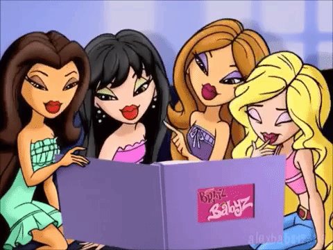

My amazing website about the Bratz
This is my 90's inspired website about the bratz! i was not born in
the 90's so i came up with something i grew up with thats close
enough. The bratz was created in 2001 and besides the bratz dolls you
can also watch the different bratz movies, play the different games or
watch the tv series.
In the Navigation bar you can click through the different names and
see more content about the different bratz!

This i my personal favourit bratz, yasmin.
Yasmin was born and lives in Stilesville, California. She attends Stiles
High and volunteers at an animal shelter on the weekends. She is a
singer in the punk-rock band, Rock Angelz, the pop group, Space Angelz,
and is one of the founders of Bratz Magazine.
Apperance
Features
Yasmin has brown skin, and usually long light brown hair, although the
color depends on the line/movie she is, as she, along with the other
girls is known to dye her hair constantly, add and remove highlights and
wear wigs. She has pretty brown eyes and a beauty mark on her left
cheek.
Style
Yasmin has what she describes as a 'bohemian' style. She loves prints
and neutral colors, earth tones and mixing fabrics and textures. She
likes thrifting and mixing vintage clothing with newer pieces.